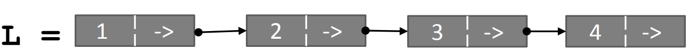

<h2>Objects</h2>

<ul>
<li> Python supports many different kinds of data
<pre>
1234
3.14159
"Hello"
[13,5,17,11,13]
{"DEL": "Delhi", "MUM": "Mumbai"}
</pre>
</li>
<li>Each is an <em>object</em>, and every object has:
<ul>
<li>a <em>type</em></li>
<li>an internal <em>data representation</em> (primitive or composite)</li>
<li>a set of procedures for <em>interaction</em> with the object</li>
</ul>
</li>
<li> An object is an <em>instance</em> of a type
<ul>
<li> <code>1234</code> is an instance of an <code>int</code></li>
<li> <code>"hello"</code> is an instance of a <code>string</code></li>
</ul>
</li>
</ul>

<h3>Object Oriented Programming (OOP)</h3>
<ul>
<li> <b>Everythng in Python is an Object</b> (and has a type)</li>
<li> can <em>create new objects</em> of some type</li>
<li> can <em>manipulate objects</em></li>
<li> can <em>destroy objects</em>
<ul>
<li> explicitly using <code>del</code> or just "forget" about them</li>
<li> python system will reclaim destroyed or inaccessible objects -- called "garbage collection"</li>
</ul>
</li>
</ul>

<h3>What are objects?</h3>
<ul>
<li> An Objects is a <em>data abstraction</em> that captures:
<ol>
<li> An <em>internal representation</em> through data attributes</li>
<li> An <em>interface</em> for interacting with object (a) through methods (aka procedures or functions); and (b) defines behaviours but hides implementation.</li>
</ol>
</li>
</ul>

<h3>Example: [1,2,3,4] has type list
<ul>
<li> How are lists <em>represented internally</em>? Linked list of cells

</li>
</ul>
